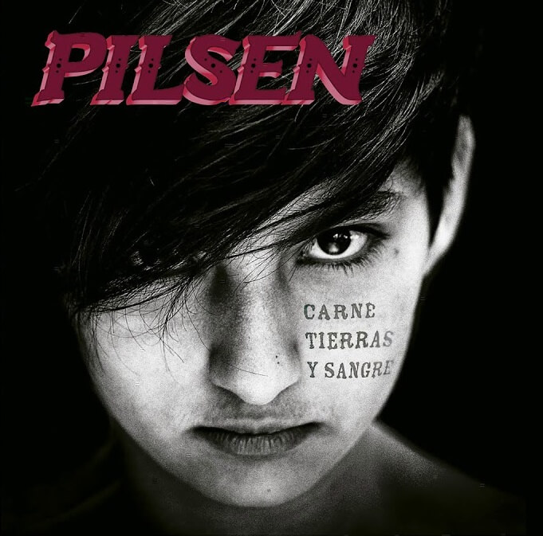
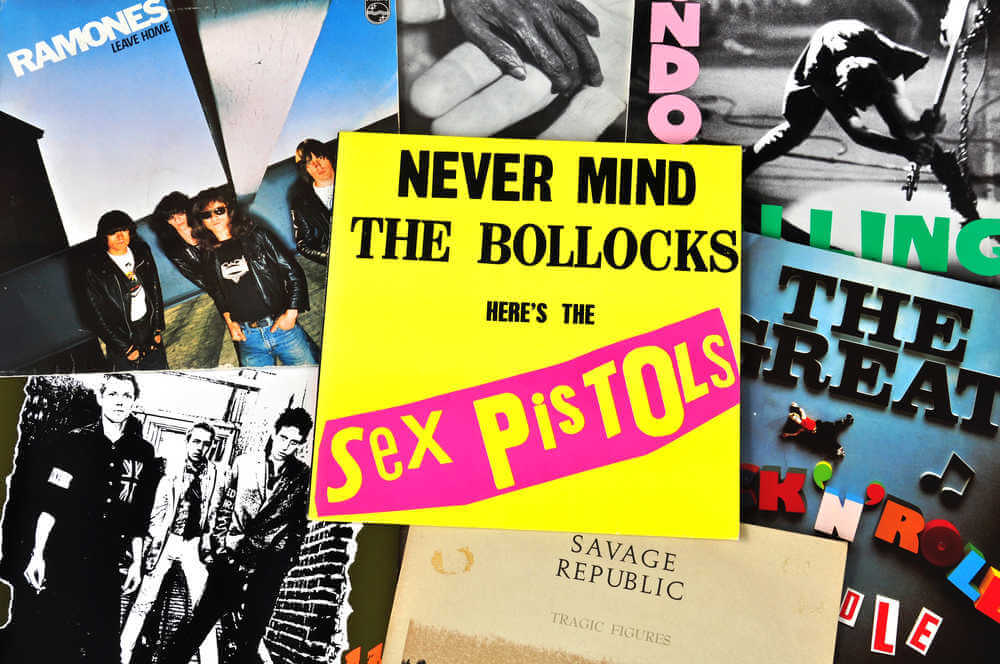
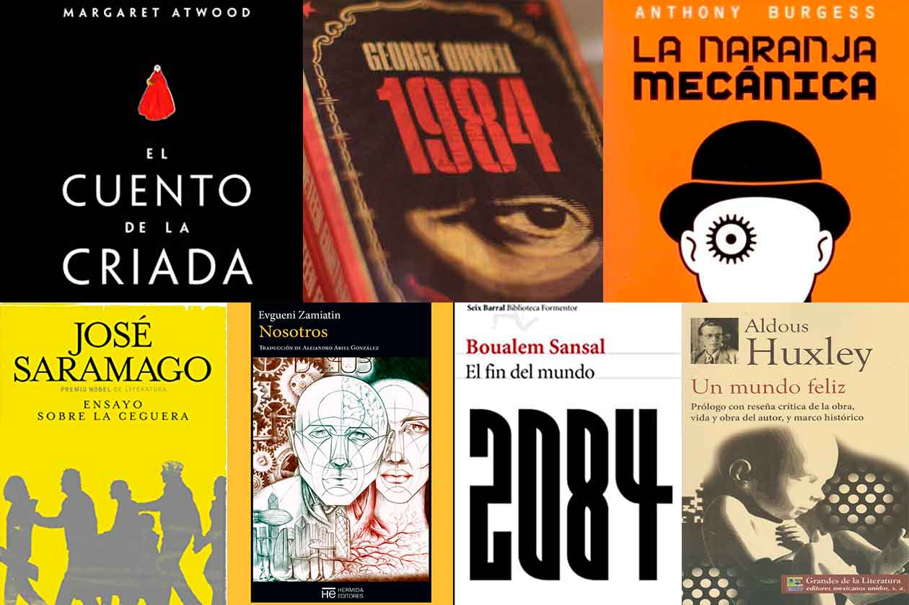

Nada más nacer
Empiezan a corrompernos
Crecemos y envejecemos
En absoluta sumisión...
Eskorbuto / Anti-todo
punk | under | kontrakultura | cine | libros | fanzines| arte | pop | historia | lucha | resistencia | rock | hip-hop | heavy-metal | hardcore | dokumentales | rap | igualdad |
Disco de la semana
Todas las semanas vamos a estar recomendando un disco de una manera injusta y arbitraria, tal cual es el mundo...

Ultimo disco de Pil Trafa tiempo antes de su partida, así también para Tomy Loiseau que falleció previamente. Sin dudas el mejor disco de punk rock, al menos, de los últimos 15 años.
Pil nos deja esta obra maestra con un gran sonido y letras llenas de conciencia social. Ganador al mejor disco alternativo en los premios Gardel de 2021.
Discos, libros, films, arte & más...

